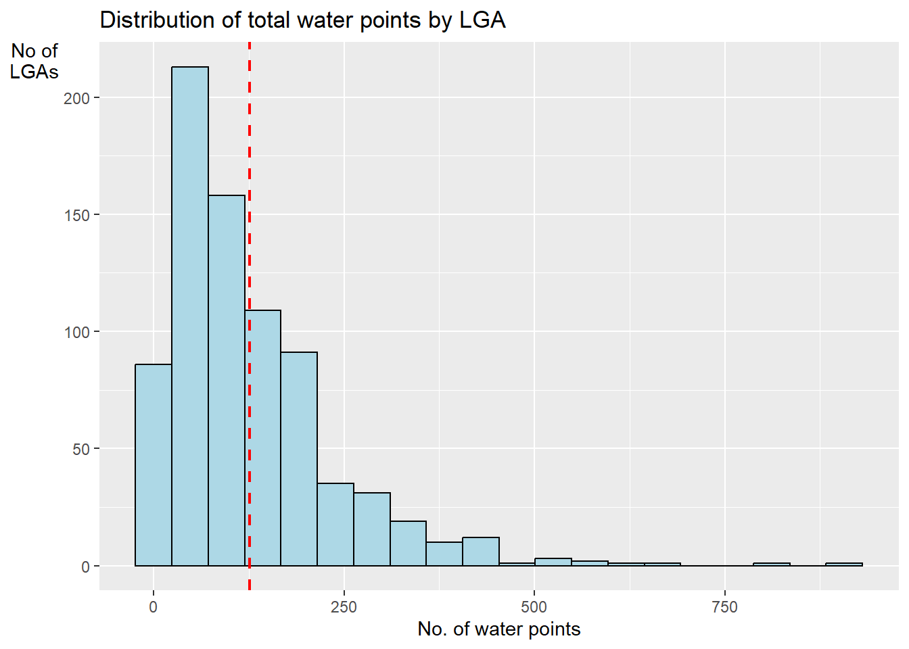
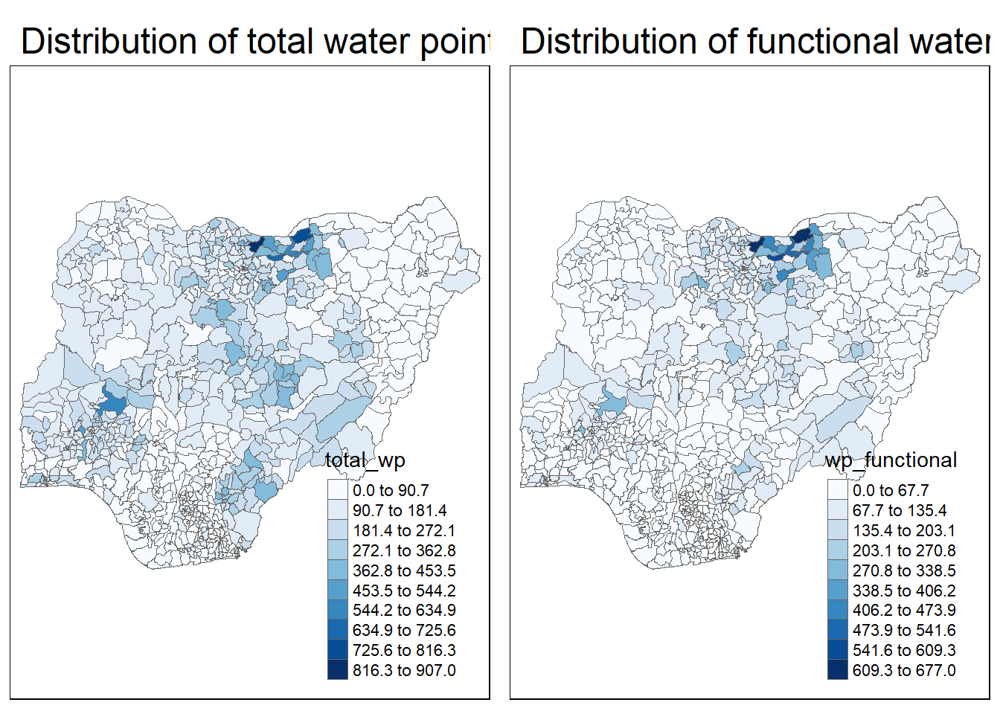

pacman::p_load(maptools, sf, tidyverse, raster, spatstat, tmap, sfdep, funModeling)Take Home Exercise 1
Take-home Exercise 1: Application of Spatial Point Patterns Analysis to discover the geographical distribution of functional and non-function water points in Osun State, Nigeria
Setting the Scene
Water is an important resource to mankind. Clean and accessible water is critical to human health. It provides a healthy environment, a sustainable economy, reduces poverty and ensures peace and security. Yet over 40% of the global population does not have access to sufficient clean water. By 2025, 1.8 billion people will be living in countries or regions with absolute water scarcity, according to UN-Water. The lack of water poses a major threat to several sectors, including food security. Agriculture uses about 70% of the world’s accessible freshwater.
Developing countries are most affected by water shortages and poor water quality. Up to 80% of illnesses in the developing world are linked to inadequate water and sanitation. Despite technological advancement, providing clean water to the rural community is still a major development issues in many countries globally, especially countries in the Africa continent.
To address the issue of providing clean and sustainable water supply to the rural community, a global Water Point Data Exchange (WPdx) project has been initiated. The main aim of this initiative is to collect water point related data from rural areas at the water point or small water scheme level and share the data via WPdx Data Repository, a cloud-based data library. What is so special of this project is that data are collected based on WPDx Data Standard.
Objectives
Geospatial analytics hold tremendous potential to address complex problems facing society. In this study, application of appropriate spatial point patterns analysis methods to discover the geographical distribution of functional and non-function water points and their co-locations if any in Osun State, Nigeria.
1 The Data
To provide answers to the questions above, three data sets will be used. They are:
Aspatial data
For the purpose of this assignment, data from WPdx Global Data Repositories will be used. There are two versions of the data. They are: WPdx-Basic and WPdx+. You are required to use WPdx+ data set.
Geospatial data
This study will focus of Osun State, Nigeria. The state boundary GIS data of Nigeria can be downloaded either from The Humanitarian Data Exchange portal or geoBoundaries.
1.1 Installing and Loading the R packages
In this take home exercise 1, six R packages will be used, they are:
sf, a relatively new R package specially designed to import, manage and process vector-based geospatial data in R.
spatstat, which has a wide range of useful functions for point pattern analysis. In this hands-on exercise, it will be used to perform 1st- and 2nd-order spatial point patterns analysis and derive kernel density estimation (KDE) layer.
raster which reads, writes, manipulates, analyses and model of gridded spatial data (i.e. raster). In this hands-on exercise, it will be used to convert image output generate by spatstat into raster format.
maptools which provides a set of tools for manipulating geographic data. In this hands-on exercise, we mainly use it to convert Spatial objects into ppp format of spatstat.
tmap which provides functions for plotting cartographic quality static point patterns maps or interactive maps by using leaflet API.
sfdep which is an interface to ‘spdep’ to integrate with ‘sf’ objects and the ‘tidyverse’.
funModeling This package contains a set of functions related to exploratory data analysis, data preparation, and model performance.
Use the code chunk below to install and launch the seven R packages.
1.2 Importing the geospatial data
In this section, st_read of sf package will be used to import these data sets into R
Importing the geoBoundaries Nigeria Level 2 Administrative Boundary Dataset
gbnigeria = st_read(dsn = "Data/Geospatial", layer = "nga_admbnda_adm2_osgof_20190417")Reading layer `nga_admbnda_adm2_osgof_20190417' from data source
`C:\Users\kwekm\Desktop\SMU Year 3 Semester 2\IS415 Geospatial Analytics and Applications\KMRCrazyDuck\IS415-KMR\Take_home_ex\Data\Geospatial'
using driver `ESRI Shapefile'
Simple feature collection with 774 features and 16 fields
Geometry type: MULTIPOLYGON
Dimension: XY
Bounding box: xmin: 2.668534 ymin: 4.273007 xmax: 14.67882 ymax: 13.89442
Geodetic CRS: WGS 841.3 Importing the aspatial data
Since WPdx+ data set is in csv format, we will use read_csv() of readr package to import Water_Point_Data_Exchange_-_PlusWPdx.csv and output it to an R object called wpdx.
wpdx <- read_csv("Data/Aspatial/Water_Point_Data_Exchange_-_Plus__WPdx__.csv") %>% filter(`#clean_country_name` == "Nigeria")1.4 Converting the Coordinate Reference System
In the code below, we will convert the Geographic Coordinate Reference System from WGS84 to EPSG:26391 Projected Coordinate System.
nigeria26391 <- st_transform(gbnigeria, crs = 26391)1.5 Creating a Simple Feature Data Frame from an Aspatial Data Frame
As the geometry is available in wkt in the column New Georeferenced Column, we can use st_as_sfc() to import the geomtry
wpdx$Geometry <- st_as_sfc(wpdx$`New Georeferenced Column`)As there is no spatial data information, firstly, we assign the original projection when converting the tibble dataframe to sf. The original is wgs84 which is EPSG:4326.
wpdx_sf <- st_sf(wpdx, crs=4326)
wpdx_sfSimple feature collection with 97478 features and 74 fields
Geometry type: POINT
Dimension: XY
Bounding box: xmin: 2.707441 ymin: 4.301812 xmax: 14.21828 ymax: 13.86568
Geodetic CRS: WGS 84
# A tibble: 97,478 × 75
row_id `#source` #lat_…¹ #lon_…² #repo…³ #stat…⁴ #wate…⁵ #wate…⁶ #wate…⁷
* <dbl> <chr> <dbl> <dbl> <chr> <chr> <chr> <chr> <chr>
1 158721 Federal Minis… 5.07 6.62 02/19/… Yes Boreho… Well Mechan…
2 158892 Federal Minis… 5.09 7.09 02/06/… Yes Boreho… Well Hand P…
3 323117 Federal Minis… 5.91 8.77 08/31/… Yes Boreho… Well Hand P…
4 300176 Federal Minis… 5.23 7.32 05/17/… Yes Boreho… Well Mechan…
5 324346 Federal Minis… 6.88 3.36 08/17/… Yes Boreho… Well Mechan…
6 297273 Federal Minis… 6.59 3.29 05/26/… Yes Boreho… Well Mechan…
7 296853 Federal Minis… 6.60 3.26 06/02/… Yes Boreho… Well Mechan…
8 323866 Federal Minis… 6.20 6.73 09/18/… Yes Boreho… Well Mechan…
9 297044 Federal Minis… 6.61 3.30 05/26/… Yes Boreho… Well Mechan…
10 324321 Federal Minis… 6.96 3.60 08/16/… Yes Boreho… Well Mechan…
# … with 97,468 more rows, 66 more variables: `#water_tech_category` <chr>,
# `#facility_type` <chr>, `#clean_country_name` <chr>, `#clean_adm1` <chr>,
# `#clean_adm2` <chr>, `#clean_adm3` <chr>, `#clean_adm4` <chr>,
# `#install_year` <dbl>, `#installer` <chr>, `#rehab_year` <lgl>,
# `#rehabilitator` <lgl>, `#management_clean` <chr>, `#status_clean` <chr>,
# `#pay` <chr>, `#fecal_coliform_presence` <chr>,
# `#fecal_coliform_value` <dbl>, `#subjective_quality` <chr>, …continue here
wpdx_spdf <- as_Spatial(wpdx_sf)
wpdx_spdfclass : SpatialPointsDataFrame
features : 97478
extent : 2.707441, 14.21828, 4.301812, 13.86567 (xmin, xmax, ymin, ymax)
crs : +proj=longlat +datum=WGS84 +no_defs
variables : 74
names : row_id, X.source, X.lat_deg, X.lon_deg, X.report_date, X.status_id, X.water_source_clean, X.water_source_category, X.water_tech_clean, X.water_tech_category, X.facility_type, X.clean_country_name, X.clean_adm1, X.clean_adm2, X.clean_adm3, ...
min values : 29756, Federal Ministry of Water Resources, Nigeria, 4.3018117, 2.707441, 01/01/2010 12:00:00 AM, No, Borehole, Piped Water, Hand Pump, Hand Pump, Improved, Nigeria, Abia, Aba North, NA, ...
max values : 685455, WaterAid UK, 13.865675, 14.2182849, 12/31/2014 12:00:00 AM, Yes, Undefined Hand Dug Well, Well, Tapstand, Tapstand, Improved, Nigeria, Zamfara, Zuru, NA, ... Next, we then convert the projection to the appropriate decimal based projection system.
wpdx_sf <- wpdx_sf %>%
st_transform(crs = 26391)2 Geospatial Data Cleaning
As the wpdx sf dataframe consist of many redundant field, we use select() to select the fields which we want to retain.
nigeria26391 <- nigeria26391 %>%
dplyr::select(c(3:4, 8:9))2.1 Checking for duplicate names
It is important to check for duplicate name in the data main data fields. Using duplicated(), we can flag out LGA names that might be duplicated as shown below:
nigeria26391$ADM2_EN[duplicated(nigeria26391$ADM2_EN) == TRUE][1] "Bassa" "Ifelodun" "Irepodun" "Nasarawa" "Obi" "Surulere"To reduce duplication of LGA names, we will put the state names behind to make it more specific.
nigeria26391$ADM2_EN[94] <- "Bassa, Kogi"
nigeria26391$ADM2_EN[95] <- "Bassa, Plateau"
nigeria26391$ADM2_EN[304] <- "Ifelodun, Kwara"
nigeria26391$ADM2_EN[305] <- "Ifelodun, Osun"
nigeria26391$ADM2_EN[355] <- "Irepodun, Kwara"
nigeria26391$ADM2_EN[356] <- "Ireopodun, Osun"
nigeria26391$ADM2_EN[519] <- "Nasarawa, Kano"
nigeria26391$ADM2_EN[520] <- "Nasarawa, Nasarawa"
nigeria26391$ADM2_EN[546] <- "Obi, Benue"
nigeria26391$ADM2_EN[547] <- "Obi, Nasarawa"
nigeria26391$ADM2_EN[693] <- "Surulere, Lagos"
nigeria26391$ADM2_EN[694] <- "Surulere, Oyo"Checking if the duplication has been resolved.
nigeria26391$ADM2_EN[duplicated(nigeria26391$ADM2_EN) == TRUE]character(0)3 Data wrangling for Water Point Data
First, let us have a look at the #status_clean column which stores the information about Functional and Non-Functional data points. The code below returns all values that were used in the column.
freq(data = wpdx_sf, input = '#status_clean')
#status_clean frequency percentage cumulative_perc
1 Functional 47228 48.45 48.45
2 Non-Functional 30638 31.43 79.88
3 <NA> 10154 10.42 90.30
4 Functional, needs repair 4792 4.92 95.22
5 Non-Functional, dry 2473 2.54 97.76
6 Functional, not in use 1775 1.82 99.58
7 Abandoned/Decommissioned 321 0.33 99.91
8 Functional but not in use 86 0.09 100.00
9 Non-Functional due to dry season 7 0.01 100.01
10 Functional but needs repair 4 0.00 100.00As there might be issues performing mathematical calculations with NA labels, we will rename them to unknown.
The code below renames the column #status_clean to status_clean, select only the status_clean for manipulation and then replace all na values to unknown.
wpdx_sf_nga <- wpdx_sf %>%
rename(status_clean = '#status_clean') %>%
dplyr::select(status_clean) %>%
mutate(status_clean = replace_na(status_clean, "unknown"))3.1 Filtering Data
With our previous knowledge, we can filter the data to obtain functional proportion counts in each LGA level. We will filter the wpdx_sf_nga dataframes to option functional and non-functional water points.
wpdx_func <- wpdx_sf_nga %>%
filter(status_clean %in%
c("Functional",
"Functional but not in use",
"Functional but needs repair"))
wpdx_nonfunc <- wpdx_sf_nga %>%
filter(status_clean %in%
c("Abadoned/Decommissioned",
"Abandoned",
"Non-Functional due to dry season",
"Non-Functional",
"Non functional due to dry season"))
wpdx_unknown <- wpdx_sf_nga %>%
filter(status_clean == "unknown")3.2 Point in Polygon Count
Utilising st_intersects() of sf package and lengths, we check where each data point for the water point which fall inside each LGA. We do each calculation separation so we can cross check later to ensure all the values sum to the same total.
nigeria_wp <- nigeria26391 %>%
mutate(`total_wp` = lengths(
st_intersects(nigeria26391, wpdx_sf_nga))) %>%
mutate(`wp_functional` = lengths(
st_intersects(nigeria26391, wpdx_func))) %>%
mutate(`wp_nonfunctional` = lengths(
st_intersects(nigeria26391, wpdx_nonfunc))) %>%
mutate(`wp_unknown` = lengths(
st_intersects(nigeria26391, wpdx_unknown)))3.3 Saving the Data in rds format
In order to retain the sf data structure for subsequent analysis, we should save the sf dataframe into rds format.
write_rds(nigeria_wp, "Data/rds/nigeria_wp.rds")3.4 Plotting the Distribution of Total Water Points by LGA in Histogram
Next, we will use mutate() of dplyr package to compute the proportion of Functional and Non- water points.
This is given by Functional Proportion = Functional Count / Total Count.
ggplot(data = nigeria_wp,
aes(x = total_wp)) +
geom_histogram(bins = 20,
color = "black",
fill = "light blue") +
geom_vline(aes(xintercept = mean(
total_wp, na.rm = T)),
color = "red",
linetype = "dashed",
size = 0.8) +
ggtitle("Distribution of total water points by LGA") +
xlab("No. of water points") +
ylab("No of\nLGAs") +
theme(axis.title.y = element_text(angle = 0))
4 Exploratory Spatial Data Analysis (ESDA)
4.1 Import the data saved in rds
We want to import the sf dataframe we have cleaned and prepared earlier
NGA_wp <- read_rds("Data/rds/nigeria_wp.rds")4.2 Visualising Distribution of Non-Functional Water Points
Here, we will plot 2 maps, p1 which shows the functional water points and p2 by total number of water points for side-by-side visualization.
p1 <- tm_shape(NGA_wp) +
tm_fill("wp_functional",
n = 10,
style = "equal",
palette = "Blues") +
tm_borders(lwd = 0.1,
alpha = 1) +
tm_layout(main.title = "Distribution of functional water points by LGA",
legend.outside = FALSE)p2 <- tm_shape(NGA_wp) +
tm_fill("total_wp",
n = 10,
style = "equal",
palette = "Blues") +
tm_borders(lwd = 0.1,
alpha = 1) +
tm_layout(main.title = "Distribution of total water points by LGA",
legend.outside = FALSE)Using the tmap_arrange() function, we can arrange the two maps plotted on a single row for side-by-side comparison.
tmap_arrange(p2, p1, nrow = 1)
wpdx# A tibble: 97,478 × 75
row_id `#source` #lat_…¹ #lon_…² #repo…³ #stat…⁴ #wate…⁵ #wate…⁶ #wate…⁷
<dbl> <chr> <dbl> <dbl> <chr> <chr> <chr> <chr> <chr>
1 158721 Federal Minis… 5.07 6.62 02/19/… Yes Boreho… Well Mechan…
2 158892 Federal Minis… 5.09 7.09 02/06/… Yes Boreho… Well Hand P…
3 323117 Federal Minis… 5.91 8.77 08/31/… Yes Boreho… Well Hand P…
4 300176 Federal Minis… 5.23 7.32 05/17/… Yes Boreho… Well Mechan…
5 324346 Federal Minis… 6.88 3.36 08/17/… Yes Boreho… Well Mechan…
6 297273 Federal Minis… 6.59 3.29 05/26/… Yes Boreho… Well Mechan…
7 296853 Federal Minis… 6.60 3.26 06/02/… Yes Boreho… Well Mechan…
8 323866 Federal Minis… 6.20 6.73 09/18/… Yes Boreho… Well Mechan…
9 297044 Federal Minis… 6.61 3.30 05/26/… Yes Boreho… Well Mechan…
10 324321 Federal Minis… 6.96 3.60 08/16/… Yes Boreho… Well Mechan…
# … with 97,468 more rows, 66 more variables: `#water_tech_category` <chr>,
# `#facility_type` <chr>, `#clean_country_name` <chr>, `#clean_adm1` <chr>,
# `#clean_adm2` <chr>, `#clean_adm3` <chr>, `#clean_adm4` <chr>,
# `#install_year` <dbl>, `#installer` <chr>, `#rehab_year` <lgl>,
# `#rehabilitator` <lgl>, `#management_clean` <chr>, `#status_clean` <chr>,
# `#pay` <chr>, `#fecal_coliform_presence` <chr>,
# `#fecal_coliform_value` <dbl>, `#subjective_quality` <chr>, …